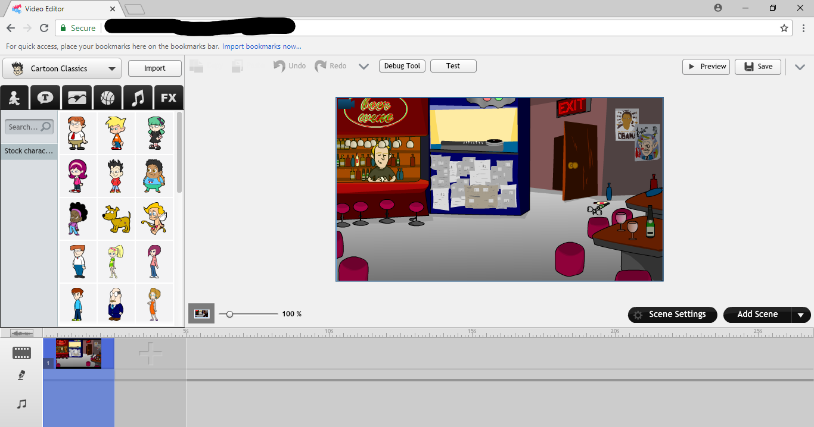

RetroAnimate: an older recovery.
RetroAnimate is an lvm project made by David's Creation#2007 on discord.
It is meant to recover the old legacy video maker in it's former glory, and is currently going well.
To apply for beta tester, just DM David on discord.
